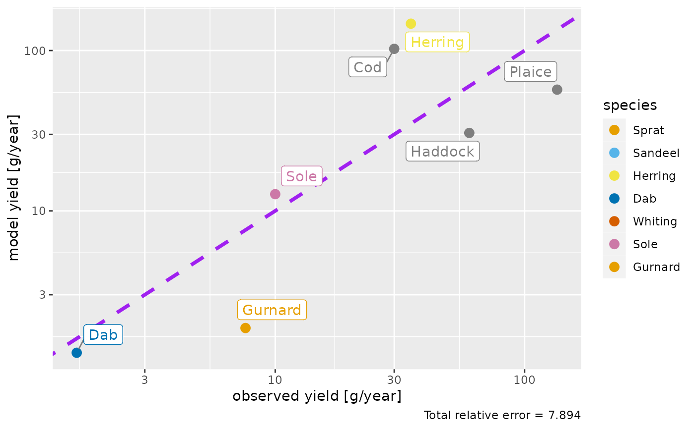
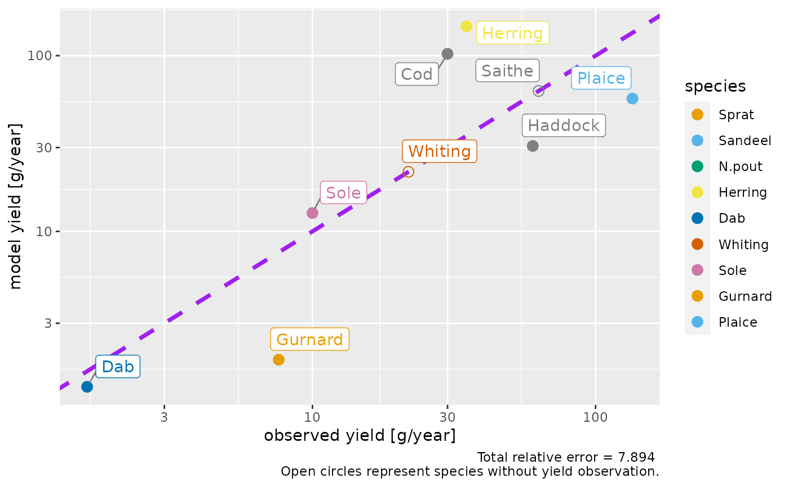
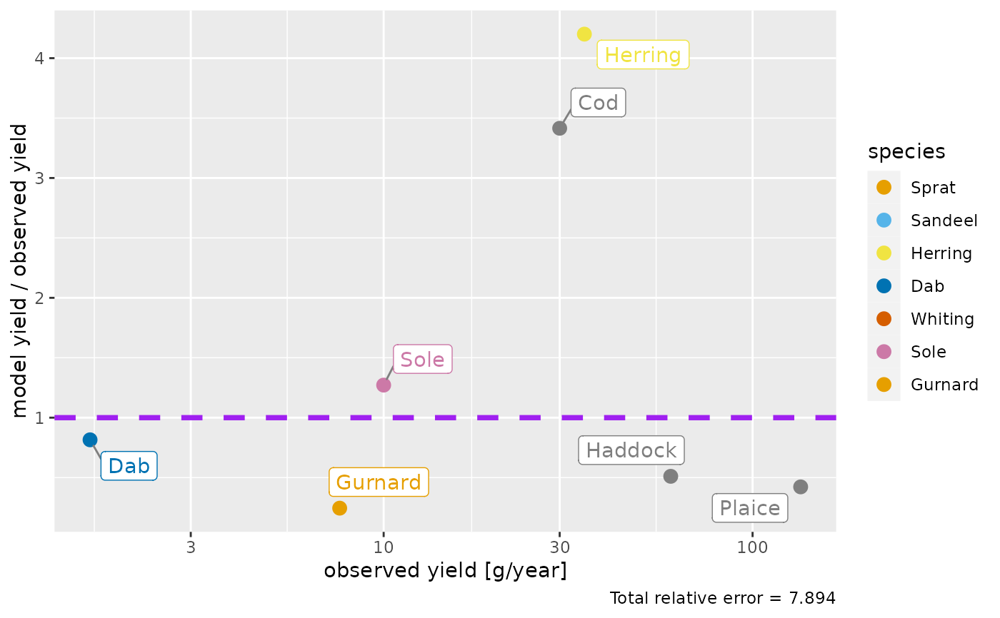
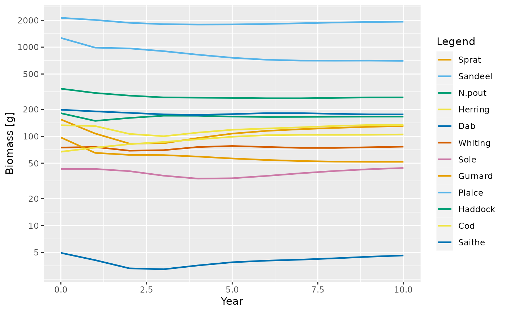
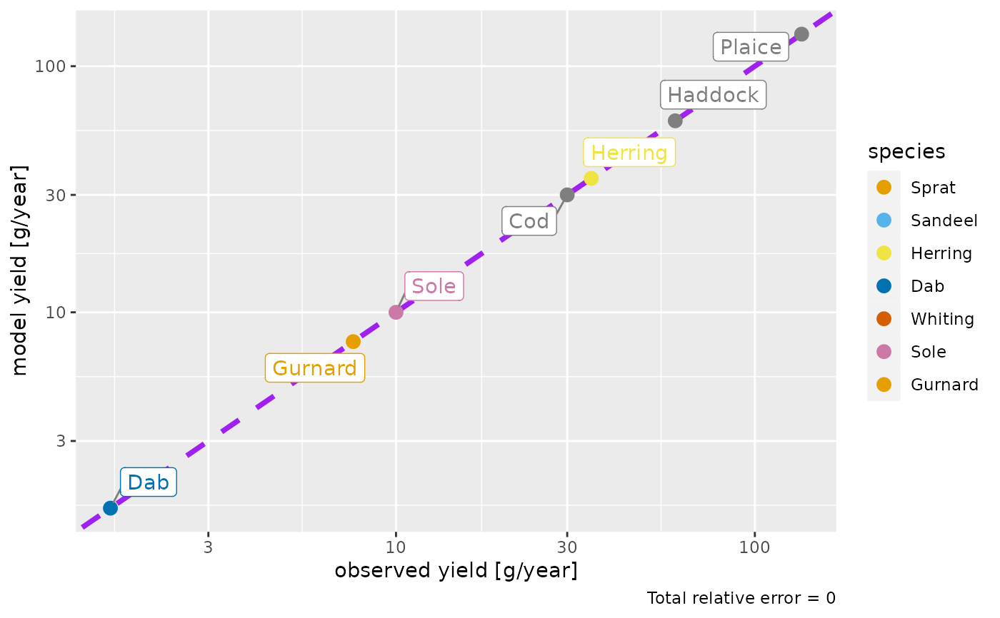
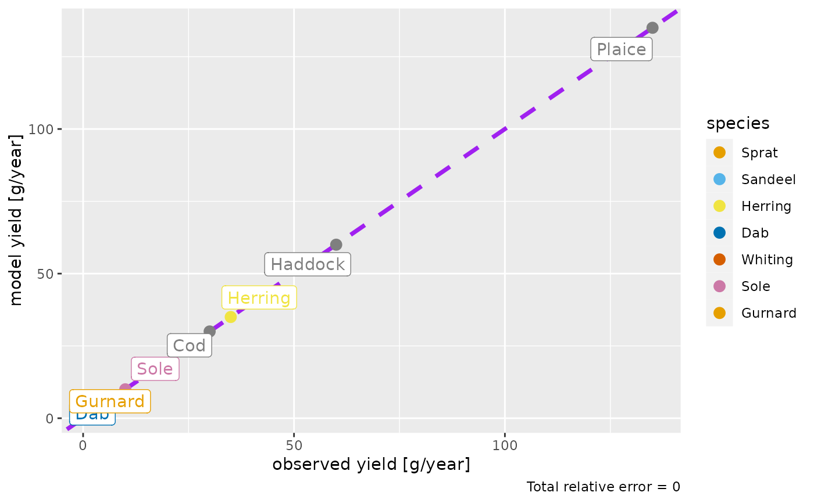

![[Experimental]](figures/lifecycle-experimental.svg) If yield observations are available for at least some species via the
If yield observations are available for at least some species via the
yield_observed column in the species parameter data frame, this function
plots the yield of each species in the model against the observed
yields. When called with a MizerSim object, the plot will use the model
yields predicted for the final time step in the simulation.
plotYieldObservedVsModel( object, species = NULL, ratio = FALSE, log_scale = TRUE, return_data = FALSE, labels = TRUE, show_unobserved = FALSE ) plotlyYieldObservedVsModel( object, species = NULL, ratio = FALSE, log_scale = TRUE, return_data = FALSE, show_unobserved = FALSE )
Arguments
| object | An object of class MizerParams or MizerSim. |
|---|---|
| species | The species to be included. Optional. By default all observed yields will be included. A vector of species names, or a numeric vector with the species indices, or a logical vector indicating for each species whether it is to be included (TRUE) or not. |
| ratio | Whether to plot model yield vs. observed yield (FALSE) or the ratio of model : observed yield (TRUE). Default is FALSE. |
| log_scale | Whether to plot on the log10 scale (TRUE) or not (FALSE). For the non-ratio plot this applies for both axes, for the ratio plot only the x-axis is on the log10 scale. Default is TRUE. |
| return_data | Whether to return the data frame for the plot (TRUE) or not (FALSE). Default is FALSE. |
| labels | Whether to show text labels for each species (TRUE) or not (FALSE). Default is TRUE. |
| show_unobserved | Whether to include also species for which no yield observation is available. If TRUE, these species will be shown as if their observed yield was equal to the model yield. |
Value
A ggplot2 object with the plot of model yield by species compared
to observed yield. If return_data = TRUE, the data frame used to
create the plot is returned instead of the plot.
Details
Before you can use this function you will need to have added a
yield_observed column to your model which gives the observed yield in
grams per year. For species for which you have no observed yield, you should set
the value in the yield_observed column to 0 or NA.
The total relative error is shown in the caption of the plot, calculated by $$TRE = \sum_i|1-\rm{ratio_i}|$$ where \(\rm{ratio_i}\) is the ratio of model yield / observed yield for species i.
Examples
# create an example params <- NS_params species_params(params)$yield_observed <- c(0.8, 61, 12, 35, 1.6, NA, 10, 7.6, 135, 60, 30, NA) params <- calibrateYield(params) # Plot with default options plotYieldObservedVsModel(params) #> The following species are not being fished in your model and will not be included in the plot: Sprat, Sandeel, N.pout.  # Plot including also species without observations plotYieldObservedVsModel(params, show_unobserved = TRUE) #> The following species are not being fished in your model and will not be included in the plot: Sprat, Sandeel, N.pout.  # Show the ratio instead plotYieldObservedVsModel(params, ratio = TRUE) #> The following species are not being fished in your model and will not be included in the plot: Sprat, Sandeel, N.pout.  # Run a simulation params <- matchYields(params) #> The following species have no yield observations and their abundances will not be changed: Whiting, Saithe. #> The following species are not being fished in your model and their abundances will not be changed: Sprat, Sandeel, N.pout. sim <- project(params, t_max = 10, progress_bar = FALSE) plotBiomass(sim)  # Plot the yield comparison at the final time plotYieldObservedVsModel(sim) #> The following species are not being fished in your model and will not be included in the plot: Sprat, Sandeel, N.pout.  # The same with no log scaling of axes plotYieldObservedVsModel(sim, log_scale = FALSE) #> The following species are not being fished in your model and will not be included in the plot: Sprat, Sandeel, N.pout. 